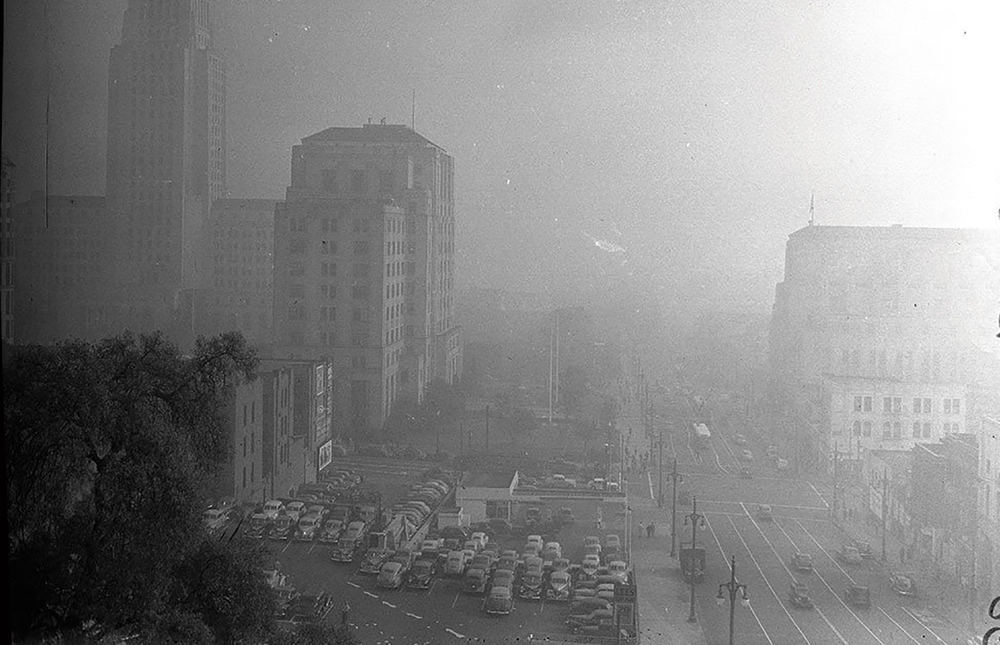

The Donora Smog of 1948
The Deadly Stagnation: In late October 1948, the industrial town of Donora, Pennsylvania, was hit by a rare meteorological phenomenon known as a temperature inversion. A layer of warm air became trapped above the cold air in the Monongahela River valley, acting like a lid over the town. Donora was home to the American Steel and Wire plant and a massive zinc works, both of which continuously pumped out thick clouds of sulfur dioxide, nitrogen dioxide, and fluoride fumes. Instead of dispersing into the atmosphere, these toxic emissions were pushed back down to the ground, concentrating into a dense, yellow-gray "death fog" that made it impossible to see more than a few feet ahead.

The Five-Day Suffocation: For five days, the residents of Donora breathed in a lethal chemical cocktail. By the second day, the town's doctors were overwhelmed by thousands of patients gasping for air. Despite the mounting crisis, the industrial plants continued to operate, their smokestacks adding to the poison until the final day of the inversion.
Firemen walked through the streets with oxygen tanks to help those collapsing in their homes, and the local hotel was converted into a temporary morgue. By the time a heavy rain finally washed the smog away on October 31, 20 people were dead, and nearly 6,000 residents—roughly half the town's population—had been sickened, many left with permanent lung damage.
Key Facts
Date: October 27–31, 1948
Location: Donora, Pennsylvania, United States
Casualties: 20 immediate deaths (with 50 more occurring shortly after due to complications); ~6,000 injured; sparked the first national conversation on air quality legislation
Cause: A temperature inversion that trapped toxic industrial emissions from steel and zinc plants at ground level, creating a lethal concentration of pollutants
The Donora Smog was a watershed moment that shattered the American belief that "smoke meant prosperity." It proved that industrial progress without environmental oversight could lead to mass casualties in a matter of days. The tragedy provided the first clear, undeniable evidence of the link between air pollution and public health crises.
This event, alongside the Great Smog of London four years later, became the primary catalyst for the modern environmental movement in the United States, directly leading to the passage of the first Clean Air Act in 1963 and the eventual creation of the Environmental Protection Agency (EPA).